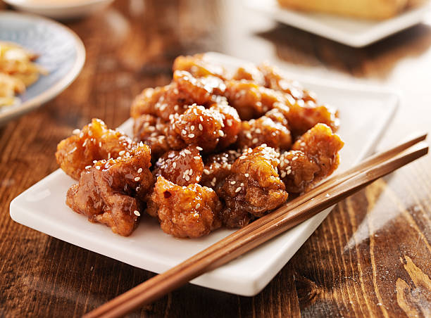

Sesame Chicken

Looking for the best sesame chicken recipe? This is it! You may want to increase the vinegar and chile paste, or lower the amount of sugar. It all depends on how sweet, tangy, or spicy you want the sauce.
Ingredients
Battered Chicken
- 2 tablespoons all purpose flour
- 2 tablespoons cornstarch
- ¼ teaspoon baking soda
- ¼ teaspoon baking powder
- 2 tablespoons low-sodium soy sauce
- 1 tablespoon dry sherry
- 2 tablespoons water
- 1 teaspoon vegetable oil
- 1 dash sesame oil
- 1 pound boneless, skinless chicken breast cubed
Sauce
- 1 cup chicken broth
- 1 cup white sugar
- 2 tablespoons distilled white vinegar
- 2 tablespoons sesame oil
- 1 teaspoon chile paste
- 1 clove garlic, minced
- ¼ cup cornstarch
- ½ cup water
Other
- 1 quart olive oil for frying
- 2 tablespoons toasted sesame seeds
Directions
- Gather all ingredients.
- Prepare the battered chicken: Sift flour, 2 tablespoons cornstarch, baking soda, and baking powder into a bowl. Pour in low-sodium soy sauce, sherry, 2 tablespoons water, vegetable oil, and dash sesame oil; stir until smooth. Stir in chicken until coated with the batter, then cover, and refrigerate for 20 minutes.
- Meanwhile, make the sauce: Bring chicken broth, sugar, vinegar, dark soy sauce, sesame oil, chile paste, and garlic to a boil in a saucepan over high heat. Dissolve 1/4 cup cornstarch into 1/2 cup water, and stir into boiling sauce. Simmer until the sauce thickens and turns clear, about 2 minutes. Reduce heat to low, and keep sauce warm.
- Heat olive oil in a deep fryer or large saucepan to 375 degrees F (190 degrees C).
- Carefully drop in battered chicken pieces, a few at a time, and fry until they turn golden brown and float to the top of the oil, 3 to 4 minutes. Drain on a paper towel-lined plate.
- To serve, place fried chicken pieces onto a serving platter, and pour the hot sauce overtop. Sprinkle with toasted sesame seeds to garnish.
- Serve and enjoy!